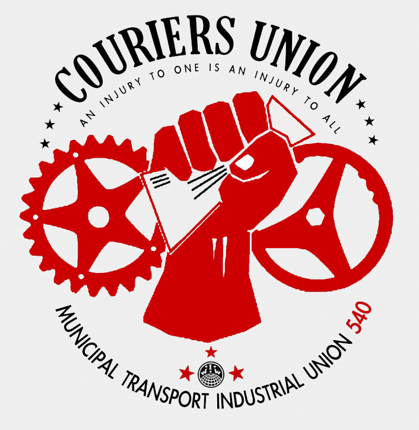

All workers engaged in municipal, short distance transportation and telecommunication services.
Submitted on Sun, 07/08/2012 - 10:48pm
By Juan Conatz - The Organizer, June 8, 2012
 In the IWW, we sometimes have to deal with two different problems: How do we approach situations where we have left our job (but still have a problem with our employer) and how do we deal with harassment and assault in the workplace?
In the IWW, we sometimes have to deal with two different problems: How do we approach situations where we have left our job (but still have a problem with our employer) and how do we deal with harassment and assault in the workplace?
Wobblies in Seattle have taken on the first question. Wanting to build organizing skills and fight back against bosses and landlords in their area, they started the Seattle Solidarity Network (‘SeaSol’).
SeaSol is a network of volunteers, open to workers both employed and unemployed, that takes on workplace and housing fights through a strategy of escalation of tactics. For instance, a tenant is denied their security deposit. Attempts to contact the landlord are ignored or delayed. SeaSol will march in with 30 people and hand the landlord a demand letter telling them to give the renter their deposit in a certain amount of time or else. If the landlord doesn’t give in, pickets will follow, and so on.
Harassment and assault in the workplace is something that has been less thought about by union organizers or the left in general, even less than the fights SeaSol typically takes on. Some of us in the union have briefly addressed sexual harassment on shopfloor, but it’s still an ongoing conversation. Seemingly not talked about at all is the issue of assault, sexual or otherwise. During the 1990s (the latest period with statistics I could easily find), there was an average of 35,000 incidents of workplace sexual assault each year.
What should be our response when this happens? What can our response be? In the following situation, these two problems intersected, and Wobblies came up with a way to address it.
Submitted on Mon, 02/13/2012 - 8:39pm
(Also available on Facebook if you’d rather.)
Reinstate postal worker shop steward.
Edmonton CUPW Shop Steward and IWW organizer Nick Drieger has been fired after many years of service at Canada Post. He was fired due to honking his horn at an action near Occupy Edmonton, who were not allowed on the university campus at the time.
His termination was based on
- Attitude towards police.
- A ticket for stunting (honking his horn).
- Being out of his delivery area.
- Activity on a wild cat strike when he was on vacation.
The plan for Tuesday February 14th is to fill their managers emails with letters of outrage over the conduct of firing this worker based on these charges.Thank you, solidarity, and lets fight to win. An injury to one is an injury to all.
Please begin sending emails and letters to the following people in response to Nick Driedger’s termination.
Wesam Haymour
Title:SPT TRANSPORTATION
Location: 9808 103 A AVE, T5J 2T6
Edmonton Alberta
Email: wesam.haymour@canadapost.postescanada.ca
Brenda Young
Title MGR SHIFT
Location:12135 149 ST, T5L 5H2
Edmonton Alberta
Email: brenda.young@canadapost.postescanada.ca
Robert Mccutcheon
Title DIR PLANT OPERATIONS
Location: 12135 149 ST T5L 5H2
Edmonton Alberta
Email: ben.mccutcheon@canadapost.postescanada.ca
Azam Bacchus
Title: OFFICER OF LABOUR RELATIONS
Location: 12135- 149 ST T5L 5H2
Edmonton Alberta
Email: azam.bacchus@canadapost.postescanada.ca
SAMPLE LETTER:
To: ________________
I am writing out of concern over the treatment of Shop Steward Nick Driedger, who has recently been dismissed. It is my understanding that Mr Nick Driedger advances the welfare and safety of his fellow workers in this role. It is hard to believe that someone as honest, positive, and hard working as Nick should be dismissed, especially in light of the charge discussed below.
Mr Nick Driedger has been accused of stunting, a charge of which he has not been found guilty. According to eyewitness testimony, he was merely honking his horn, which could only make him more visible as he drove through an area with many police and protestors. Also, according to eyewitnesses, he ceased after hearing shouting from the officers in question. The eyewitness testimony in his favour is substantial, and it is disturbing that Canada Post Corporation would find Nick Driedger guilty in advance of the verdict of a court of law.
I, ____________________ request that Nick Driedger be reinstated as a full time mail service courier with no harm to his seniority. I also request that any targeting of him due to his activities as a CUPW shop steward come to an immediate end.
Submitted on Tue, 08/16/2011 - 2:47am
Couriers Launch Campaign to Improve Conditions Industry-Wide
SAN FRANCISCO – Friday, August 12, The IWW Couriers Union Organizing Committee publicly asserts the right of workers at Speedway Delivery and Messenger Service, and throughout the courier industry, to a living wage.
For many years workers in the courier industry have been subjected to shamefully low or wildly fluctuating compensation from employers. Couriers work day in and day out – working in trucks, on bikes, or on foot – in extremely dangerous conditions, under intense pressure to deliver parcels on time. While most couriers fulfill their ominous task dutifully, few find that their compensation fulfills the task of making ends meet. Living hand to mouth is the norm for the people on whose backs our metropolises thrive.
At San Francisco-based Speedway Delivery and Messenger Service, conditions are no better. In fact, they’re much worse. Bought by current owners Lori O’Rourke and Charlie Lutge in the 1980s from former owners who refused to deal with then-emerging unionizing efforts, Speedway has pushed working conditions below even non-union standards. Their couriers endure harassment and disrespectful treatment from management, are extorted for equipment replacements, and to top it off, make an insultingly low commission of about 35% per delivery (most companies pay 50%), or as little as $8.00 an hour. That’s almost 20% less than the prevailing San Francisco minimum wage of $9.92 an hour, which is still far too low for most Bay Area workers to live on.
Submitted on Sun, 09/26/2010 - 5:27pm
Richmond Transit Riders Union
220 West Broad Street
Richmond, Virginia 23220
richmondtru@gmail.com
Dear Mayor Dwight C. Jones, Council Persons and CEO John M. Lewis Jr.,
In regards to Councilpersons Tyler & Conner's paper calling for a 'GRTC Transit Study Task Force' [Ord. No. 2010-173], the Richmond Transit Riders Union understands that a similar study has already been presented. We are concerned that another such study would be redundant.
The Greater Richmond Transit Company's 387 page 'Comprehensive Operations Analysis' [ http://ridegrtc.com/images/GRTC_Final_COA.pdf ] was conducted over a three year period from 2004 – 2007 outlining many strategies, trends, regional demographics, and grievances taken directly from the ridership.
Councilperson Tyler stated during the September 23, 2010 'Governmental Operations Committee' meeting that he had not yet read this analysis.
GRTC's study already contains valuable information and suggestions, even possible solutions that would help to increase ridership and move GRTC towards a more equitable and efficient public transportation system.
Submitted on Sun, 09/26/2010 - 1:44pm
Originally posted here.
Chicago’s Little Village neighborhood has been without accessible bus service for over a decade. The CTA’s 31st st. bus route was eliminated as a ‘cost-cutting measure’ in 1998, leaving schools, businesses, and residents isolated from the city’s expansive transit network. The Little Village community, LVLHS, and the Little Village Environmental Justice Organization spent years mounting an unsuccessful campaign to reopen/expand the CTA’s 31st St. route; as of the recent cuts in bus service throughout Chicago, which have resulted in the loss of nine express routes and over 1,000 transit jobs, it has become clear that progress is impossible unless members of the community take control of their transit options.